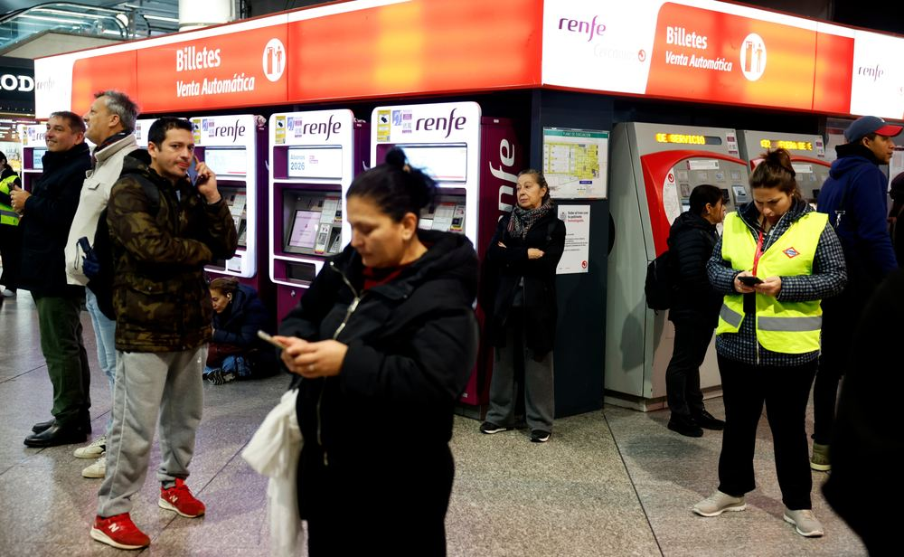

Renfe pide a los viajeros que busquen alternativas a Cercanías y Rodalies por el incumplimiento de los servicios mínimos en la huelga del ferrocarril

La protesta sindical en favor de mayores medidas de seguridad para el tren colapsa líneas en Madrid y Barcelona, y deja suspendidas 90 salidas en la alta velocidad, donde también se registran demoras
Nuevo día de cancelaciones masivas y demoras en el ferrocarril en todo el país por una huelga de 24 horas que comenzó a medianoche de este martes. Más de 1,5 millones de viajeros habituales están viendo expuesto su habitual modo de transporte y desde primera hora se da un enfrentamiento entre Renfe y los sindicatos por lo que la operadora denuncia como incumplimiento de los servicios mínimos en Cercanías de Madrid y Rodalies de Cataluña, los dos principales núcleos ferroviarios del país. La mayor parte de las líneas están severamente afectadas, ante lo que Renfe recomienda la búsqueda de medios de transporte alternativos. Las fuerzas sindicales, entre ellas la de maquinistas SEMAF y las…